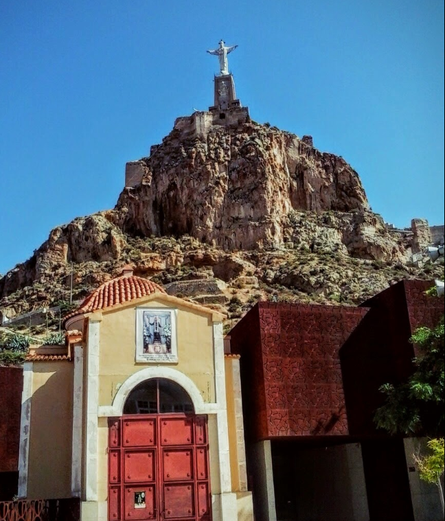
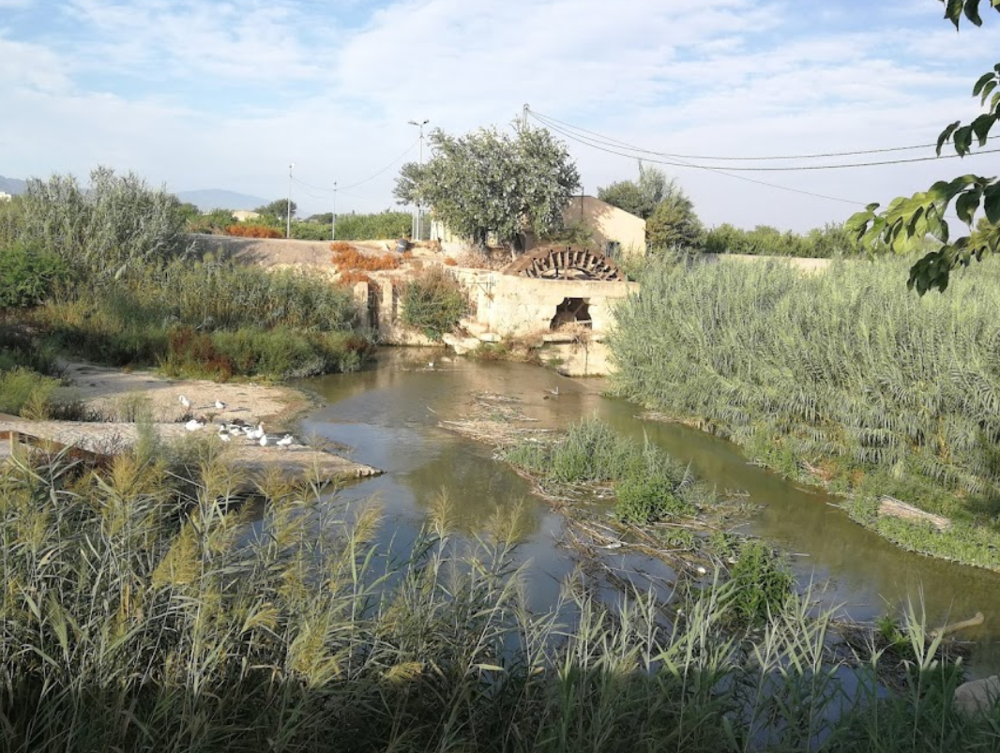
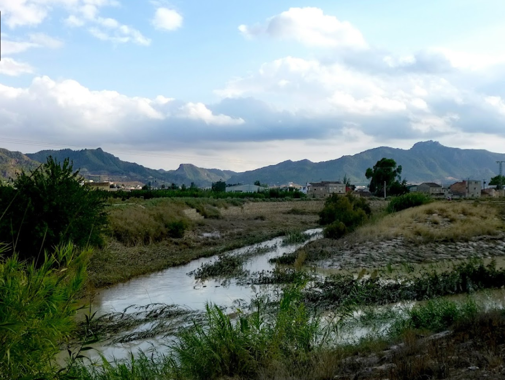
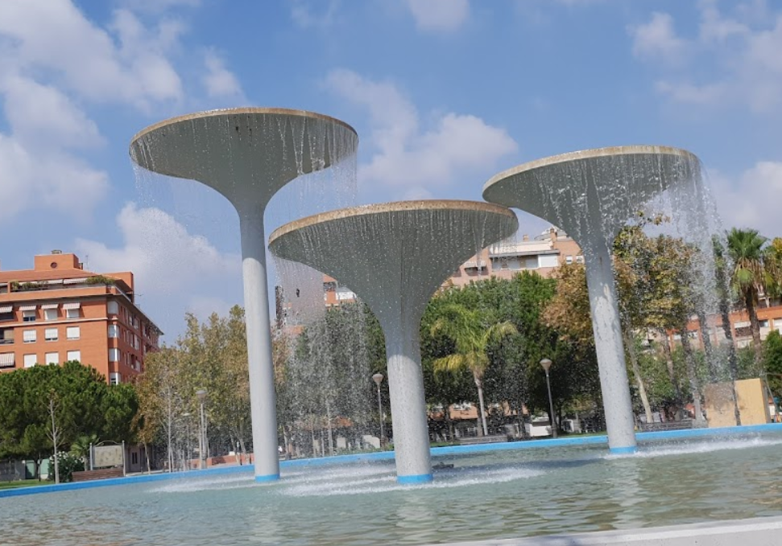

Plaza de Santiago
Salida: 10:30Punto de partida de la ruta.

Fecha: 23 de febrero de 2025 · Salida: 10:30 (Plaza de Santiago)
Distancia: 34 km | Duración aproximada: 4 h en movimiento
Dificultad: Baja | Ascenso total: 90 m
Ruta circular fácil por huerta y carril bici, con paradas en Monteagudo, El Esparragal, Beniel y regreso por el río Segura.
Punto de partida de la ruta.
Parada en el Centro de Visitantes para conocer las civilizaciones argárica, íbera, romana y árabe.
Almuerzo y juegos junto al campo de fútbol.

Ecuador de la ruta. Comida, descanso y juegos en parque.
Regreso a Murcia por el carril bici junto al río.
Final del recorrido, merienda y juegos en las calles peatonales cercanas.
